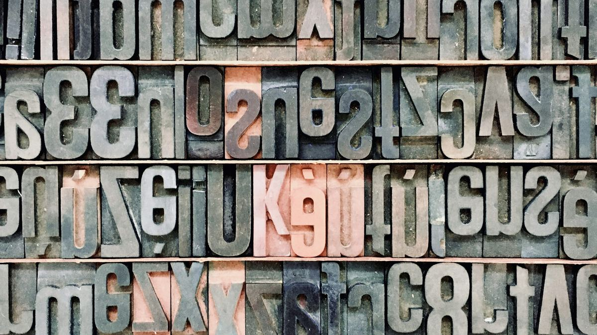
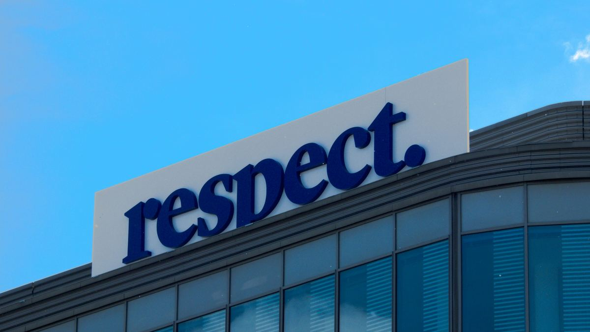
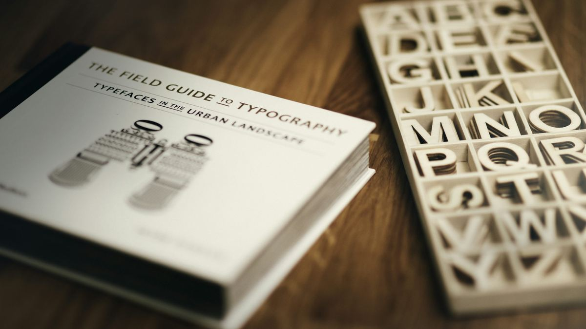
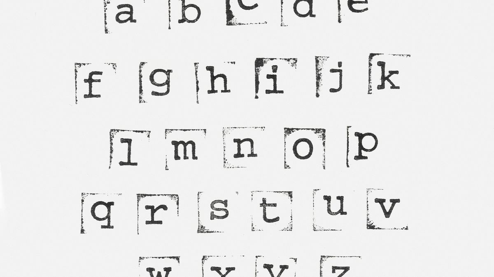
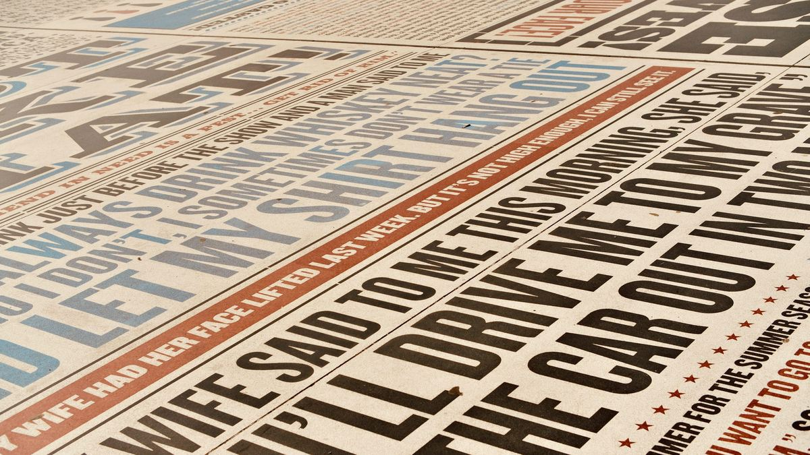

WHY TYPOGRAPHY CARRIES HALF YOUR LOGO'S WEIGHT.
When founders describe the logo they want, they usually describe a symbol. An icon, a clever mark, something with a hidden meaning. Then the name gets set in whatever typeface came with the template, like the letters are decoration. That order is backwards, and it quietly kills more logos than any bad symbol ever could.

The wordmark is the logo
For most businesses, the name set in the right typeface IS the logo. Customers do not point at the little icon and say, that is who we buy from. They say the name, they type the name, they search the name. The symbol sits beside the wordmark for a few years and earns its place slowly. The letters do the daily work from day one. This is why big brands can drop their symbol entirely and still be recognized. The wordmark carried the weight all along. If you are a startup, your symbol has no history yet. Your letters are all anyone will see for a long time. Choose them like they matter, because they do.

Type has personality before you read a word
People judge a typeface in a fraction of a second, long before they read the name. A sharp geometric sans says modern and precise. A classic serif says established and trustworthy. A soft rounded font says friendly and approachable. A thin fashion serif says premium and expensive. This judgment happens automatically. You cannot switch it off, and neither can your customers. The problem comes when the personality fights the business. A law firm set in a playful rounded font feels unreliable. A kids brand set in cold industrial letters feels unwelcoming. The letters are making a promise the business may not want to keep. Get the personality right and the name starts selling before a single word is read.

Readability beats cleverness
There is a temptation to pick the decorative typeface, the one with the flourishes, the swashes, the unusual letterforms that look so interesting at full size. Then the logo shrinks to a phone screen, a favicon, an embroidered shirt, and the name turns into noise. A logo lives its hardest life at small sizes. The typeface must survive a 32 pixel favicon, a single color stamp, a quick glance from across the street. If the name cannot be read instantly in those conditions, the clever letterforms are not clever. They are obstacles. Boring and readable will always outperform interesting and confusing, because a name nobody can read is a brand nobody can remember.
Weight, case, and spacing say as much as the letterforms
Two logos can use the same typeface and feel completely different. All caps with wide letter spacing reads confident and established, like a company that does not need to shout. Title case with tight spacing reads efficient and modern. A bold weight says strength and presence. A light weight says precision and calm. These small decisions set the tone of the name before anyone has thought about the meaning of the letters. The mistake is to leave them at default. Every wordmark deserves deliberate choices about how the letters sit together: the spacing adjusted by hand, the weight picked for the mood, the case chosen for the voice. When this is done well, nobody notices. They just feel that the logo looks right. That invisible rightness is the whole game.

One typeface, used everywhere, becomes a brand
Here is the part most startups skip. The logo typeface should not be a one time choice. It should be the typeface that appears on the website headings, the packaging, the price list, the social posts. When the same letterforms show up everywhere, they stop being just letters. They become a signal. Customers start recognizing your work before they see your name, the same way they recognize a voice on the phone. This only works if you commit. Seven free fonts downloaded from seven different sites will never do this. One strong typeface, chosen deliberately and used with discipline, builds more recognition than any symbol could. Consistency is what turns type into identity.

A symbol can be beautiful and still mean nothing. Letters, chosen well, are doing the talking from the first glance.